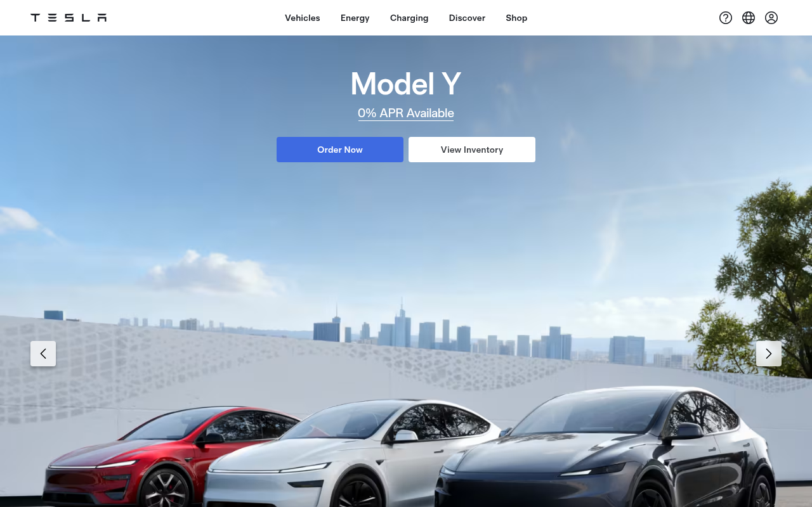

Design System Report
Tesla — 모노크롬 + 레드 액센트
tesla.com CSS에서 추출한 디자인 패턴. 극도로 미니멀한 팔레트 — 배경은 #F4F4F4, 레드 #CC0000이 유일한 chromatic 포인트.

Quick Start
5분 안에 Tesla처럼 만들기 — 3가지만 하면 80%
1 · 폰트 + weight
body {
font-family: "Gotham SSm A",
"Gotham SSm B",
"Helvetica Neue",
Helvetica, Arial, sans-serif;
font-weight: 400;
}
2 · 배경 + 텍스트
:root {
--bg: #F4F4F4;
/* ⚠️ 순백 아님 */
--fg: #000000;
}
body {
background: var(--bg);
color: var(--fg);
}
3 · 브랜드 레드
:root {
--brand: #CC0000;
/* CSS에서 감지된
유일한 chromatic */
}
절대 하지 말아야 할 것 하나: 배경을 순백
#FFFFFF으로 두는 것. Tesla의 마케팅 사이트 배경은 #F4F4F4 — 이 차이가 "일반 전자상거래"와 Tesla를 구분한다.
Source
tesla.com
극도로 미니멀한 CSS
Fetched
2026.04.13
CSS custom properties 파싱
System
Custom
토큰 시스템 미노출
Palette
3색
#F4F4F4 · #000000 · #CC0000
01 · Provenance
출처와 수집 기준
CSS 파싱 결과 단 3가지 컬러만 감지. 토큰 시스템은 인라인 스타일 방식으로 미노출.
Source URL
https://tesla.comFetched2026-04-13
Extractorcurl + Chrome UA (5-tier fallback)
Token prefixN/A — 커스텀 프로퍼티 시스템 미감지
MethodCSS 커스텀 프로퍼티 직접 파싱 · AI 추론 없음
02 · 테크 스택
인라인 중심 최소화 CSS
Tesla 마케팅 사이트는 전역 CSS 토큰보다 컴포넌트별 인라인 스타일을 선호. 정적 파싱으로 추출 가능한 정보가 매우 제한적.
Framework
React / Next.js (추정). 인라인 스타일 방식 채택.
Design System
자체 내부 시스템 (미공개). 토큰 prefix 없음.
Default Theme
Light. 배경
#F4F4F4 (순백 아님). 차량 사진 hero.Font Loading
CSS에서 미감지. 시각 관찰: Gotham SSm 계열.
03 · 컬러
3색 팔레트 — 극도의 절제
CSS 파싱에서 단 3가지 컬러 후보. 레드 #CC0000이 유일한 chromatic 포인트.
전체 팔레트 (CSS 감지 3색)
페이지 배경 (8회)#F4F4F4
다크 배경/텍스트#000000
브랜드 레드 (유일 chromatic)#CC0000
CSS 파싱 한계: Tesla 사이트는 JS 기반 인라인 스타일로 대부분의 값을 주입. 위 3색이 정적 CSS에서 감지된 전부이며, 실제 UI에는 더 많은 값이 동적으로 적용될 수 있음.
04 · 컴포넌트
차량 Hero + 미니멀 CTA
Tesla 마케팅의 핵심 패턴: 전체 폭 차량 사진 + 최소한의 텍스트 + 검정 CTA.
05 · 라이팅 원칙
모델명만, 수식어 없이
Tesla 카피는 최소한의 단어로 최대의 임팩트. 과장 없이 수치로 말한다.
Headline
모델명만, 최소한의 수식
"Model S"
Spec Copy
실제 수치 명시, 과장 없이
"제로백 1.99초 · 항속거리 628km"
06 · CSS · Tailwind
Drop-in CSS 스니펫
CSS 파싱 데이터 기반 핵심 토큰.
/* Tesla — copy into your root stylesheet */
:root {
/* Fonts (CSS 미감지 — 시각 관찰) */
--tesla-font-family: "Gotham SSm A", "Gotham SSm B",
"Helvetica Neue", Helvetica, Arial, sans-serif;
--tesla-font-weight-normal: 400;
--tesla-font-weight-bold: 700;
/* Brand (CSS 파싱 기반) */
--tesla-color-brand-red: #CC0000;
/* Surfaces */
--tesla-bg-page: #F4F4F4; /* ⚠️ 순백 아님 */
--tesla-bg-dark: #000000;
--tesla-text: #000000;
--tesla-text-on-dark: #FFFFFF;
}07 · Do / Don't
자주 틀리는 것들
Tesla 디자인을 구현할 때 가장 많이 틀리는 패턴.
✓ DO
- 페이지 배경에
#F4F4F4사용 (순백 아님) - Hero는 차량 전체 폭 사진으로 채우기
- CTA 텍스트 최소화 ("주문하기", "시승 신청")
- H1은 모델명만, 수식어 없이
- 스펙 표현 시 실제 수치 명시
✗ DON'T
- 배경을 순백
#FFFFFF으로 쓰지 말 것 - 과장형 마케팅 문구 쓰지 말 것
- CTA 버튼에 레드
#CC0000쓰지 말 것 — 버튼은 블랙 - 레이아웃을 복잡하게 만들지 말 것